Power to detect QTLs in single cell data
Introduction
We previously found that our study lost power to detect eQTLs, and was underpowered to directly detect dQTLs.
Here, we perform the following analyses:
- We derive the power function accounting for measurement error
- We show that dQTL effects are larger than eQTL effects (in terms of log fold change)
- We show that PVE explains lack of power to detect dQTLs (rather than measurement error)
- We solve for the sample size required to achieve 80% power to detect the strongest dQTLs
Empirical power calculation
Differential dispersion
Perform a nested model comparison for each gene \(k\), comparing the model:
\[ r_{ijk} \sim \mathrm{ZINB}(\pi_{ik}, \mu_{ik}, \phi_{ik}) \]
against the model:
\[ r_{ijk} \sim \mathrm{ZINB}(\pi_{ik}, \mu_{ik}, \phi_{i}) \]
def lrt(umi, onehot, design, size_factor): _, _, _, llik0 = fit( umi=umi.values.T.astype(np.float32), onehot=onehot.astype(np.float32), design=design.astype(np.float32), size_factor=size_factor.astype(np.float32), fit_null=True, return_llik=True, learning_rate=5e-2, max_epochs=4000) _, _, _, llik1 = fit( umi=umi.values.T.astype(np.float32), onehot=onehot.astype(np.float32), design=design.astype(np.float32), size_factor=size_factor.astype(np.float32), return_llik=True, learning_rate=5e-2, max_epochs=4000) T = 2 * (llik1 - llik0) return T, st.chi2(1).logsf(T)
Null calibration via parametric bootstrap
Sample null data from the model, using empirical estimates of the parameters in the observed data.
<<zinb-imports>> <<tf-imports>> <<tf-zinb-impl>> <<lrt-impl>> <<sim-impl>> log_mu = pd.read_table('/project2/mstephens/aksarkar/projects/singlecell-qtl/data/density-estimation/design1/zi2-log-mu.txt.gz', index_col=0, sep=' ') log_phi = pd.read_table('/project2/mstephens/aksarkar/projects/singlecell-qtl/data/density-estimation/design1/zi2-log-phi.txt.gz', index_col=0, sep=' ') logodds = pd.read_table('/project2/mstephens/aksarkar/projects/singlecell-qtl/data/density-estimation/design1/zi2-log-mu.txt.gz', index_col=0, sep=' ') params = pd.DataFrame({'log_mu': log_mu['NA18507'], 'log_phi': log_phi['NA18507'], 'logodds': logodds['NA18507']}, index=log_mu.index) params = params[params['log_mu'] > -10] n = 100 umi = pd.DataFrame([simulate(2 * n, size=1e5, log_mu=log_mu, log_phi=log_phi, logodds=logodds)[0][:,0] for _, (log_mu, log_phi, logodds) in params.iterrows() if log_mu > -10], index=params.index) onehot = np.zeros((2 * n, 2)) onehot[:n,0] = 1 onehot[n:,1] = 1 design = np.zeros((2 * n, 1)) size_factor = 1e5 * np.ones((2 * n, 1)) T, P = lrt(umi, onehot, design, size_factor) pd.DataFrame({'chi2': T, 'logp': P}, index=umi.index).to_csv('null-calibration-p.txt.gz', sep='\t', compression='gzip')
sbatch --partition=gpu --gres=gpu:1 --mem=16G --job-name=tf-lrt-null --output=tf-lrt-null-parametric.out #!/bin/bash source activate scqtl python /project2/mstephens/aksarkar/projects/singlecell-qtl/code/tf-lrt-null-parametric.py
Submitted batch job 46322399
Read the results.
null_lrt = pd.read_table('/scratch/midway2/aksarkar/singlecell/power/null-calibration-p.txt.gz') N = null_lrt.shape[0]
Report how many genes were simulated.
N
1832
Estimate bootstrap CIs for the quantiles.
B = np.sort(st.chi2(1).rvs((N, 100)), axis=0) ci = np.percentile(B, [2.5, 97.5], axis=1)
Plot the QQ-plot.
plt.clf() plt.gcf().set_size_inches(4, 4) grid = st.chi2(1).ppf(np.linspace(0, 1 - 1 / N, N)) plt.scatter(grid, null_lrt['chi2'].sort_values(), c='k', s=2) plt.fill_between(grid, ci[0], ci[1], color='k', alpha=0.1) lim = [0, 1.01 * grid.max()] plt.plot(lim, lim, c='r', lw=1) plt.xlim(lim) plt.xlabel('Expected $\chi^2$ statistic') _ = plt.ylabel('Observed $\chi^2$ statistic')
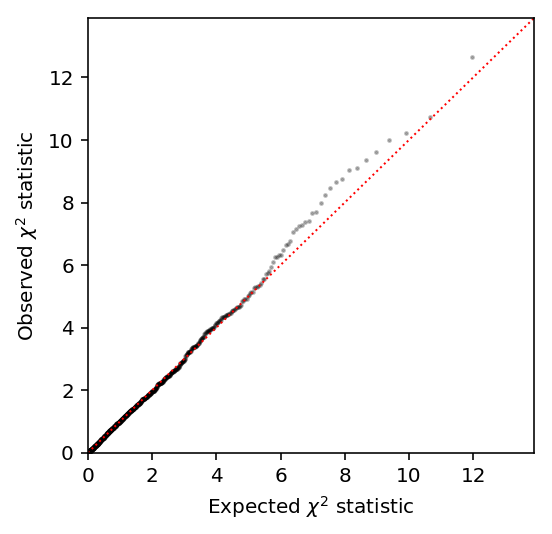
Power
Sample from the assumed model.
<<zinb-imports>> <<tf-imports>> <<tf-zinb-impl>> <<lrt-impl>> <<sim-impl>> log_mu = pd.read_table('/project2/mstephens/aksarkar/projects/singlecell-qtl/data/density-estimation/design1/zi2-log-mu.txt.gz', index_col=0, sep=' ') log_phi = pd.read_table('/project2/mstephens/aksarkar/projects/singlecell-qtl/data/density-estimation/design1/zi2-log-phi.txt.gz', index_col=0, sep=' ') logodds = pd.read_table('/project2/mstephens/aksarkar/projects/singlecell-qtl/data/density-estimation/design1/zi2-log-mu.txt.gz', index_col=0, sep=' ') params = pd.DataFrame({'log_mu': log_mu['NA18507'], 'log_phi': log_phi['NA18507'], 'logodds': logodds['NA18507']}, index=log_mu.index) params = params[params['log_mu'] > -10].sample(n=50) sample_sizes = np.geomspace(1e2, 1e5, 5).astype(int) log_fold_changes = np.log(np.geomspace(1.1, 2, 5)) depths = np.geomspace(1e4, 1e6, 5) result = [] for num_mols in depths: for log_fc in log_fold_changes: for num_samples in sample_sizes: umi = [] for _, (log_mu, log_phi, logodds) in params.iterrows(): umi.append(np.hstack([ simulate(num_samples, size=num_mols, log_mu=log_mu, log_phi=log_phi, logodds=logodds)[0][:,0], simulate(num_samples, size=num_mols, log_mu=log_mu, log_phi=log_phi + log_fc, logodds=logodds)[0][:,0] ])) umi = pd.DataFrame(umi, index=params.index) onehot = np.zeros((umi.shape[1], 2)) onehot[:num_samples,0] = 1 onehot[num_samples:,1] = 1 design = np.zeros((umi.shape[1], 1)) size_factor = num_mols * np.ones((umi.shape[1], 1)) T, P = lrt(umi, onehot, design, size_factor) result.append(pd.DataFrame({ 'num_mols': num_mols, 'num_samples': num_samples, 'log_fold_change': log_fc, 'chi2': T, 'logp': P})) pd.concat(result).to_csv('lrt-power.txt.gz', sep='\t', compression='gzip')
sbatch --partition=gpu --gres=gpu:1 --mem=16G --job-name=tf-lrt-power --output=tf-lrt-power.out #!/bin/bash source activate scqtl python /project2/mstephens/aksarkar/projects/singlecell-qtl/code/tf-lrt-power.py
Submitted batch job 46367157
sacct -j 46367157 -o Elapsed
Elapsed ---------- 06:59:58 06:59:58 06:59:58
Move the results to permanent storage.
rsync -FFau /scratch/midway2/aksarkar/singlecell/power/ /project2/mstephens/aksarkar/projects/singlecell-qtl/data/power/
Read the results.
lrt_results = (pd.read_table('/project2/mstephens/aksarkar/projects/singlecell-qtl/data/power/lrt-power.txt.gz', index_col=0) .reindex()) features = ['num_mols', 'num_samples', 'log_fold_change'] lrt_power = (lrt_results .groupby(features) .apply(lambda x: (np.exp(x['logp']) < 0.05).sum() / x.shape[0]) .to_frame() .reset_index())
Plot the results.
plt.clf() fig, ax = plt.subplots(1, 2, sharey=True) fig.set_size_inches(5.5, 3) num_samples = 100 groups = sorted(set(lrt_power['num_mols'])) for i, n in enumerate(groups): color = colorcet.cm['kbc']((i + .5) / len(groups)) subset = lrt_power[np.logical_and(lrt_power['num_mols'] == n, lrt_power['num_samples'] == num_samples)] ax[0].plot(np.exp(subset['log_fold_change']), subset[0], lw=1, marker='.', ms=8, c=color, label='$10^{{{:.1f}}}$'.format(np.log(n) / np.log(10))) ax[0].legend(title='# molecules', frameon=False) ax[0].set_xlabel('Fold change in dispersion') ax[0].set_ylabel('Power at level 0.05') ax[0].set_title('100 cells') num_mols = 1e5 grid = np.log(np.linspace(1.1, 2, 100)) groups = sorted(set(lrt_power['num_samples'])) for i, n in enumerate(groups): color = colorcet.cm['kgy']((i + .5) / len(groups)) subset = lrt_power[np.logical_and(lrt_power['num_mols'] == num_mols, lrt_power['num_samples'] == n)] ax[1].plot(np.exp(subset['log_fold_change']), subset[0], lw=1, marker='.', ms=8, c=color, label='$10^{{{:.1f}}}$'.format(np.log(n) / np.log(10))) ax[1].legend(title='# samples', frameon=False, loc='center left', bbox_to_anchor=(1, .5)) ax[1].set_xlabel('Fold change in dispersion') ax[1].set_title('$10^5$ molecules') fig.tight_layout()
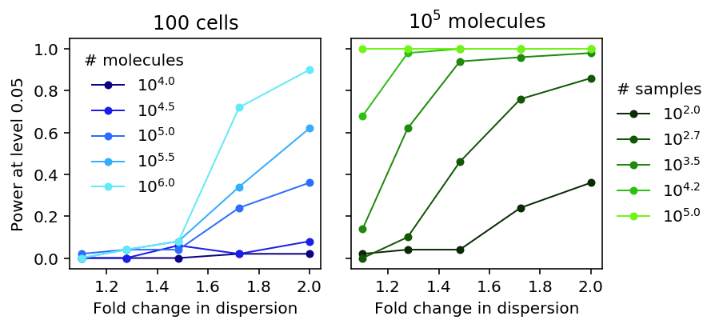
QTL discovery
We assume the phenotype is generated from \(m\) causal effects (out of \(p\) variants) following a linear model:
\[ \theta_i = \sum_j X_{ij} \beta_j + \epsilon_i \]
\[ \mathbb{E}[x_i] = 0, \mathbb{V}[x_i] = 1 \]
\[ \beta_j \sim N(0, 1) \text{ if \(j\) causal}\]
\[ \epsilon_i \sim N(0, \mathbb{V[X \beta]} (1 / h^2 - 1)) \]
def read_dosage(vcf, row, window=100000): records = list(vcf.query(row['#Chr'], row['start'] - window, row['start'] + window)) if records: x = np.array([record[9:] for record in records]).astype(np.float).T x = pd.DataFrame(x, columns=[record[2] for record in records]) return x else: return None def read_vcf_geno(vcf, chrom, start, end): records = list(vcf.query(chrom, start, end)) if records: x = (np.array([[_.split('/') for record in records for _ in record[9:]]]) .reshape(len(records), -1, 2) .astype(float) .sum(axis=-1)) return np.array(x).T else: return None def generate_pheno(x, pve, m=None): x = x[:,np.logical_and(x.mean(axis=0) / 2 > 0.05, x.std(axis=0) > 0)] n, p = x.shape if p == 0: return None if m is None: theta = np.random.normal(size=p) else: theta = np.zeros(p) theta[np.random.choice(p, m, replace=False)] = np.random.normal(size=m) x -= x.mean(axis=0) x /= x.std(axis=0) y = x.dot(theta) y += np.random.normal(scale=np.sqrt(y.var() * (1 / pve - 1)), size=n) y -= y.mean() y /= y.std() return y.reshape(-1, 1) def lm(x, y): n = y.shape[0] beta = x.T.dot(y) / n df = n - 1 rss = ((y ** 2).sum() - beta ** 2 * n) sigma2 = rss / df se = np.sqrt(sigma2 / n) return beta, se _sf = st.chi2(1).sf def nominal_test(x, y): beta, se = lm(x, y) return _sf((beta / se) ** 2) def beta_llik(theta, x): return -st.beta.logpdf(x, *theta).mean() def permutation_test(x, y, num_trials=100): pval = nominal_test(x, y).min() null_pheno = y.copy() null_pvals = [] for _ in range(num_trials): np.random.shuffle(null_pheno) null_pvals.append(nominal_test(x, null_pheno).min()) null_pvals = np.array(null_pvals) theta = np.ones(2) opt = so.minimize(beta_llik, x0=theta, args=(null_pvals,)) if opt.success: theta = opt.x else: # Method of moments theta = np.array([1, (1 / null_pvals.mean() - 1)]) theta *= np.square(null_pvals.mean()) * ((1 - null_pvals.mean()) / null_pvals.var() - 1) return st.beta.cdf(pval, *theta) def evaluate(vcf, eqtls, num_individuals, num_causal, pve, num_genes=100): query = eqtls.sample(n=num_genes) result = [] for _, record in query.iterrows(): # Important: GEUVADIS chromosomes are coded 1-22 x = read_vcf_geno(vcf, record['chr'][3:], record['start'] - 100000, record['start'] + 100000) if x is None: continue y = None while y is None: # Important: rejection sampling is needed to get a subset of individuals # with enough variable SNPs keep = np.random.choice(x.shape[0], num_individuals, replace=False) z = x[keep] y = generate_pheno(z, pve=pve, m=num_causal) pval = permutation_test(z, y) result.append({ 'gene': record.name, 'num_individuals': z.shape[0], 'num_snps': z.shape[1], 'num_causal': num_causal, 'pve': pve, 'pval': pval}) return pd.DataFrame.from_dict(result)
QC the GEUVADIS genotypes.
sbatch --partition=broadwl --mem=4G --job-name=plink -a 1-22 #!/bin/bash plink --memory 4000 --vcf /project/compbio/geuvadis/genotypes/GEUVADIS.chr${SLURM_ARRAY_TASK_ID}.*.vcf.gz --maf 0.05 --geno 0.01 --make-bed --out geuvadis-$SLURM_ARRAY_TASK_ID
Submitted batch job 46479117
Write out and index the QC'ed VCF.
sbatch --partition=broadwl --mem=4G --job-name=geuvadis --out=geuvadis.out #!/bin/bash set -e module load parallel source activate scqtl parallel echo geuvadis-{} ::: $(seq 1 22) >merge.txt plink --memory 4000 --merge-list merge.txt --recode vcf-iid --out geuvadis bgzip geuvadis.vcf tabix geuvadis.vcf.gz
Submitted batch job 46404341
Run the power calculation on 28 CPUs.
<<power-imports>> <<eqtl-sim-impl>> vcf = tabix.open('/scratch/midway2/aksarkar/singlecell/power/geuvadis.vcf.gz') # Restrict to genes where we previously successfully mapped eQTLs eqtls = pd.read_table('/project2/mstephens/aksarkar/projects/singlecell-qtl/data/scqtl-mapping/pooled.txt.gz', sep=' ', index_col=0).dropna() args = [(vcf, eqtls, n, m, pve) for n in (53, 100, 200, 300, 400) for m in (1, None) for pve in np.linspace(0.01, 0.1, 10)] np.random.seed(0) result = [evaluate(*a) for a in args] pd.concat(result).to_csv('eqtl-power.txt.gz', compression='gzip', sep='\t')
sbatch --partition=broadwl -n1 -c28 --exclusive --time=3:00:00 --mem=16G --job-name=eqtl-power --output=eqtl-power.out #!/bin/bash source activate scqtl python /project2/mstephens/aksarkar/projects/singlecell-qtl/code/eqtl-power.py
Submitted batch job 46541021
Read the results.
# Important: we used None for infinitesimal, which gets parsed as missing qtl_results = pd.read_table('/project2/mstephens/aksarkar/projects/singlecell-qtl/data/power/eqtl-power.txt.gz', index_col=0).fillna(-1) qtl_results['sig'] = qtl_results.apply(lambda x: x['pval'] < 0.05, axis=1).astype(int) qtl_power = (qtl_results .groupby(['num_individuals', 'num_causal', 'pve'])['sig'] .agg([np.mean, np.std]) .reset_index() .rename(columns={'mean': 'power', 'std': 'se'})) qtl_power['se'] /= 10
Plot the results.
plt.clf() fig, ax = plt.subplots(1, 2, sharey=True) fig.set_size_inches(5.5, 3) groups = sorted(set(qtl_power['num_individuals'])) for i, m in enumerate([1, -1]): for n in groups: subset = np.logical_and(qtl_power['num_individuals'] == n, qtl_power['num_causal'] == m) color = colorcet.cm['linear_kry_5_95_c72']((n - 53) / (max(groups) - 25)) ax[i].plot(qtl_power.loc[subset, 'pve'], qtl_power.loc[subset, 'power'], marker='.', c=color, lw=1, ms=8, label=n) ax[i].fill_between(qtl_power.loc[subset, 'pve'], qtl_power.loc[subset, 'power'] - 1.96 * qtl_power.loc[subset, 'se'], qtl_power.loc[subset, 'power'] + 1.96 * qtl_power.loc[subset, 'se'], color=color, alpha=0.1) ax[0].set_title('1 causal') ax[1].set_title('Infinitesimal') ax[0].set_ylabel('Power at level 0.05') ax[-1].legend(title='# individuals', frameon=False, loc='center left', bbox_to_anchor=(1, .5)) for a in ax: a.set_xlabel('Proportion of variance explained') a.set_xlim(0.005, .105) fig.tight_layout()
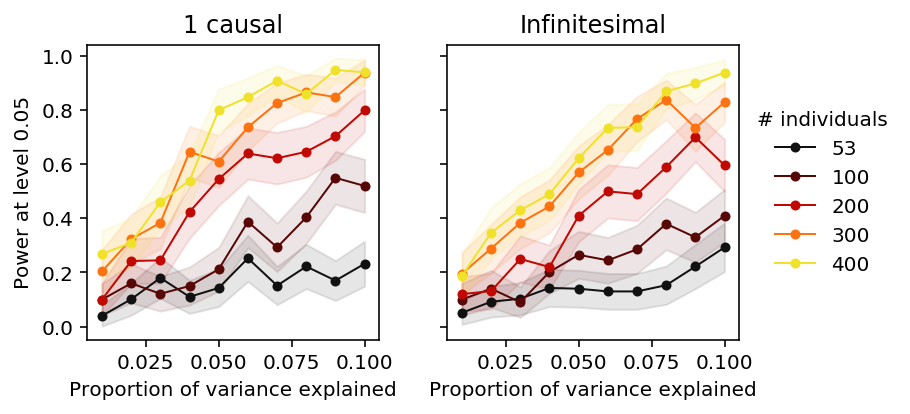
Distribution of effect sizes.
Use ash to estimate the distribution of true effect sizes across all
genes. We need to compute regression standard errors ourselves.
def run_nominal_pass(vcf, pheno, header, std=True, cov=None): # Annihilator matrix I - X X^+ M = None result = [] for _, record in pheno.iterrows(): x = read_dosage(vcf, record) if x is not None: x.index = header y = record x, y = x.align(y, axis='index', join='inner') x -= x.mean(axis=0) x /= x.std(axis=0) if M is None and cov is not None: cov = cov.T.align(y, axis='index', join='inner')[0] C = np.array(cov - cov.mean(axis=0)) M = np.eye(C.shape[0]) - C.dot(np.linalg.pinv(C)) y = y.astype(float).values.reshape(-1, 1) if M is not None: y = M.dot(y) y -= y.mean() if std: y /= y.std() beta, se = lm(x, y) result.append(pd.DataFrame({'gene': record.name, 'beta': beta[0], 'se': se[0]})) return pd.concat(result)
<<power-imports>> import argparse <<eqtl-sim-impl>> <<nominal-pass-def>> parser = argparse.ArgumentParser() parser.add_argument('--vcf', required=True) parser.add_argument('--pheno', required=True) parser.add_argument('--cov') parser.add_argument('--no-std', action='store_true') parser.add_argument('--out', default=None) args = parser.parse_args() vcf = tabix.open(args.vcf) header = pd.read_table(args.vcf, skiprows=2, nrows=1, header=0).columns[9:] pheno = pd.read_table(args.pheno, index_col=4) if args.cov is not None: cov = pd.read_table(args.cov, sep=r'\s+', engine='python', index_col=0) else: cov = None result = run_nominal_pass(vcf, pheno, header, cov=cov, std=not args.no_std) if args.out is None: out = 'nominal-pass.txt.gz' else: out = args.out result.to_csv(out, sep='\t', compression='gzip')
sbatch --partition=broadwl -a 1-7 -n1 -c28 --exclusive --job-name=nominal --out nominal.out --time=60:00 #!/bin/bash source activate scqtl tasks=( "python /project2/mstephens/aksarkar/projects/singlecell-qtl/code/qtl-nominal.py --vcf /scratch/midway2/aksarkar/singlecell/scqtl-mapping/yri-120-dosages.vcf.gz --pheno /scratch/midway2/aksarkar/singlecell/scqtl-mapping/log_phi.bed.gz --out log_phi.txt.gz" "python /project2/mstephens/aksarkar/projects/singlecell-qtl/code/qtl-nominal.py --vcf /scratch/midway2/aksarkar/singlecell/scqtl-mapping/yri-120-dosages.vcf.gz --pheno /project2/mstephens/aksarkar/projects/singlecell-qtl/data/scqtl-mapping/mean.bed.gz --cov /project2/mstephens/aksarkar/projects/singlecell-qtl/data/scqtl-mapping/mean-covars.txt --out mean.txt.gz" "python /project2/mstephens/aksarkar/projects/singlecell-qtl/code/qtl-nominal.py --vcf /scratch/midway2/aksarkar/singlecell/scqtl-mapping/yri-120-dosages.vcf.gz --pheno /project2/mstephens/aksarkar/projects/singlecell-qtl/data/scqtl-mapping/bulk.bed.gz --cov /project2/mstephens/aksarkar/projects/singlecell-qtl/data/scqtl-mapping/bulk-covars.txt --out bulk.txt.gz" "python /project2/mstephens/aksarkar/projects/singlecell-qtl/code/qtl-nominal.py --vcf /scratch/midway2/aksarkar/singlecell/scqtl-mapping/yri-120-dosages.vcf.gz --pheno /scratch/midway2/aksarkar/singlecell/scqtl-mapping/resid.bed.gz --cov /scratch/midway2/aksarkar/singlecell/scqtl-mapping/resid-covars.txt --out resid.txt.gz" "python /project2/mstephens/aksarkar/projects/singlecell-qtl/code/qtl-nominal.py --vcf /scratch/midway2/aksarkar/singlecell/scqtl-mapping/yri-120-dosages.vcf.gz --pheno /scratch/midway2/aksarkar/singlecell/scqtl-mapping/cv_resid.bed.gz --out cv_resid.txt.gz" "python /project2/mstephens/aksarkar/projects/singlecell-qtl/code/qtl-nominal.py --vcf /scratch/midway2/aksarkar/singlecell/scqtl-mapping/yri-120-dosages.vcf.gz --pheno /scratch/midway2/aksarkar/singlecell/scqtl-mapping/variance.bed.gz --cov /scratch/midway2/aksarkar/singlecell/scqtl-mapping/variance-covars.txt --out variance.txt.gz" "python /project2/mstephens/aksarkar/projects/singlecell-qtl/code/qtl-nominal.py --vcf /scratch/midway2/aksarkar/singlecell/scqtl-mapping/yri-120-dosages.vcf.gz --pheno /project2/mstephens/aksarkar/projects/singlecell-qtl/data/scqtl-mapping/fano.bed.gz --out fano.txt.gz" "python /project2/mstephens/aksarkar/projects/singlecell-qtl/code/qtl-nominal.py --vcf /scratch/midway2/aksarkar/singlecell/scqtl-mapping/yri-120-dosages.vcf.gz --pheno /project2/mstephens/aksarkar/projects/singlecell-qtl/data/scqtl-mapping/cv.bed.gz --out cv.txt.gz" ) exec ${tasks[$SLURM_ARRAY_TASK_ID]}
Submitted batch job 47554516
rsync -FFau /scratch/midway2/aksarkar/singlecell/power/ /project2/mstephens/aksarkar/projects/singlecell-qtl/data/power/
Compare nominal passes.
zcat /scratch/midway2/aksarkar/singlecell/scqtl-mapping/variance.bed.gz | head -n100 | bgzip >test.bed.gz tabix test.bed.gz
sbatch --partition=broadwl -a 0-1 --job-name=qtltools --out=qtltools.out --mem=8G #!/bin/bash source activate scqtl tasks=( "python /project2/mstephens/aksarkar/projects/singlecell-qtl/code/qtl-nominal.py --vcf /scratch/midway2/aksarkar/singlecell/scqtl-mapping/yri-120-dosages.vcf.gz --pheno /scratch/midway2/aksarkar/singlecell/scqtl-mapping/test.bed.gz --out test0.txt.gz" "qtltools cis --vcf /scratch/midway2/aksarkar/singlecell/scqtl-mapping/yri-120-dosages.vcf.gz --bed /scratch/midway2/aksarkar/singlecell/scqtl-mapping/test.bed.gz --nominal 1 --out test1.txt" ) exec ${tasks[$SLURM_ARRAY_TASK_ID]}
Submitted batch job 48221006
qtltools_nominal = pd.read_table('/scratch/midway2/aksarkar/singlecell/power/test1.txt', sep=' ', nrows=1000) qtltools_nominal.columns = [ 'gene', 'chr', 'start', 'end', 'strand', 'num_vars', 'distance', 'id', 'var_chr', 'var_start', 'var_end', 'p', 'beta', 'top'] my_nominal = pd.read_table('/scratch/midway2/aksarkar/singlecell/power/test0.txt.gz', sep='\t').rename(columns={'Unnamed: 0': 'id'})
my_nominal.reset_index().merge(qtltools_nominal, on=['id', 'gene'])[['id', 'beta_x', 'beta_y']]
id beta_x beta_y 0 rs142686126.chr1.794778 0.051682 0.216358 1 rs3131935.chr1.795414 -0.050426 -0.119040 2 rs146592146.chr1.795753 0.001788 0.006190 3 rs112896657.chr1.795824 0.051891 0.214589 4 rs59380221.chr1.795988 0.032952 0.074112 5 rs12132398.chr1.796100 -0.174481 -0.758004 6 rs12083781.chr1.796375 0.057476 0.147094 7 rs2980291.chr1.796511 -0.042158 -0.180669 8 rs115637794.chr1.796727 -0.076004 -0.168515 9 rs75932129.chr1.796767 -0.017476 -0.055272 10 rs116099766.chr1.797037 0.124858 0.613323 11 rs58013264.chr1.797440 -0.032593 -0.071501 12 rs115861588.chr1.797820 0.099642 0.382590 13 rs4951864.chr1.798026 0.002535 0.007094 14 rs138433656.chr1.798185 0.099495 0.380502 15 rs10900604.chr1.798400 -0.113678 -0.265585 16 rs11240777.chr1.798959 -0.114018 -0.266249 17 rs147406924.chr1.799079 0.154399 0.585582 18 rs4245756.chr1.799463 -0.065371 -0.211145 19 rs56737117.chr1.799770 0.154298 0.585004 20 rs6681049.chr1.800007 -0.032110 -0.098891 21 rs4951931.chr1.800383 0.072846 0.189145 22 rs61768212.chr1.801467 -0.029307 -0.063779 23 rs7516866.chr1.801943 -0.028939 -0.062082 24 rs7553084.chr1.801995 -0.001968 -0.004610 25 rs7553096.chr1.802026 -0.001366 -0.003171 26 rs7553197.chr1.802093 0.040481 0.115622 27 rs10157494.chr1.802496 -0.015210 -0.031884 28 rs143833712.chr1.803560 0.068789 0.289046 29 rs17080269.chr1.803582 0.068744 0.288917 .. ... ... ... 655 rs9697457.chr1.934345 -0.010590 -0.054242 656 rs113602214.chr1.935046 0.164753 0.414303 657 rs3128113.chr1.935459 -0.207823 -0.417954 658 rs3121571.chr1.935492 -0.207805 -0.417907 659 rs139298395.chr1.935659 0.029185 0.075963 660 rs116904365.chr1.935671 -0.037574 -0.079749 661 rs3128114.chr1.935715 0.043071 0.185346 662 rs3128115.chr1.935833 -0.041650 -0.084187 663 rs1936360.chr1.936111 -0.069018 -0.154572 664 rs3121570.chr1.936194 0.008492 0.017539 665 rs3121569.chr1.936210 0.065106 0.131308 666 rs114518990.chr1.936687 0.105122 0.850814 667 rs28615823.chr1.937250 -0.043994 -0.094377 668 rs2489000.chr1.937688 0.102750 0.245056 669 rs116316555.chr1.937778 0.082389 0.670716 670 rs2710869.chr1.938116 0.103067 0.245825 671 rs2710868.chr1.938125 -0.055675 -0.108116 672 rs2799058.chr1.938213 0.134820 0.295558 673 rs9697602.chr1.938220 0.132325 0.462519 674 rs4595317.chr1.938300 -0.093668 -0.206930 675 rs201843604.chr1.938709 0.166522 0.483151 676 rs200016087.chr1.939491 0.021671 0.106809 677 rs115139441.chr1.939813 0.128923 0.351112 678 rs2799056.chr1.940005 0.006854 0.012488 679 rs4503294.chr1.940096 0.054534 0.130647 680 rs200808990.chr1.940331 0.130108 0.354378 681 rs58913475.chr1.940809 -0.010181 -0.022233 682 rs114443588.chr1.941101 0.131836 0.359123 683 rs61703480.chr1.941137 0.095570 0.230451 684 rs3128116.chr1.941284 -0.010262 -0.022411 [685 rows x 3 columns]
qtltools appears to compute \(X' y\) on standardized \(X, y\), but then
reports \(\hat\beta\) on some other scale. Our implementation agrees with
numpy.linalg.lstsq on standardized data.
inline double cis_data::getSlope(double nominal_correlation, double gsd, double psd) { if (gsd < 1e-16 || psd < 1e-16) return 0; else return nominal_correlation * psd / gsd; }
Compare standard error computations.
def jacknife(x, y): n = y.shape[0] # pandas is too clever here xty = x.values.T * y.values beta = xty.sum(axis=1) / n se = np.array([(n * beta - xty[:,i]) / (n - 1) for i in range(y.shape[0])]).std(axis=0) return beta, se def bootstrap(x, y, b): n = y.shape[0] beta = x.values.T.dot(y.values) / n B = [] for _ in range(b): index = np.random.choice(n, n, replace=True) B.append(x.iloc[index].values.T.dot(y.iloc[index]) / n) se = np.array(B).std(axis=0) return beta, se def run_se_pass(vcf, pheno, header): np.random.seed(0) result = [] for _, record in pheno.iterrows(): x = read_dosage(vcf, record) if x is not None: x.index = header y = record x, y = x.align(y, axis='index', join='inner') y = y.astype(float) beta0, se0 = lm(x, y) _, se1 = jacknife(x, y) _, se2 = bootstrap(x, y, 100) result.append(pd.DataFrame({'gene': record.name, 'beta0': beta0, 'se0': se0, 'se1': se1, 'se2': se2})) return pd.concat(result)
res = run_se_pass(vcf, pheno.sample(n=100), header)
ticks = ['Analytic', 'Jacknife', 'Bootstrap'] plt.clf() fig, ax = plt.subplots(3, 3, sharex=True, sharey=True) fig.set_size_inches(8, 8) for y in range(3): for x in range(3): if y <= x: ax[y, x].set_axis_off() else: ax[y, x].scatter(res['se{}'.format(x)], res['se{}'.format(y)], s=2, c='k', alpha=0.25) ax[y, x].plot([0, .4], [0, .4], c='r', ls=':', lw=1) for y in range(3): ax[y, 0].set_ylabel(ticks[y]) for x in range(3): ax[-1, x].set_xlabel(ticks[x]) fig.tight_layout()
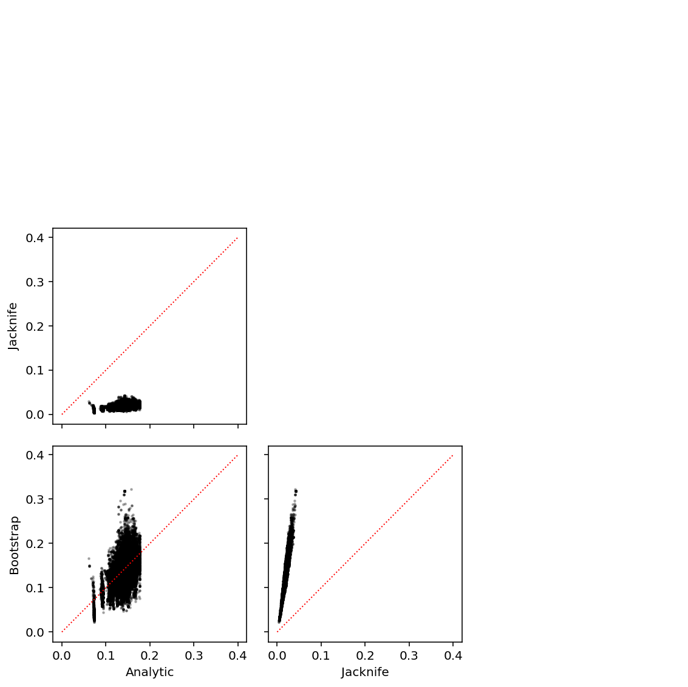
Downsample variants per gene like in Urbut et al 2016 to make the estimation problem easier.
def downsample(x, n): assert n >= 0 if x.shape[0] >= n: return x.loc[np.random.choice(x.index, n, replace=False)] else: return x def fit_ash(summary_stats): summary_stats = pd.read_table(summary_stats).groupby('gene').apply(downsample, n=10) return ashr.ash(summary_stats['beta'], summary_stats['se'], method='fdr', mixcompdist='normal')
Fit ash.
ash_results = {x: fit_ash('/scratch/midway2/aksarkar/singlecell/power/{}.txt.gz'.format(x)) for x in ('log_phi', 'mean', 'bulk', 'resid', 'cv_resid')}
Serialize the results.
with open('/scratch/midway2/aksarkar/singlecell/power/ash-results.pkl', 'wb') as f: pickle.dump(ash_results, f)
Read the results.
with open('/scratch/midway2/aksarkar/singlecell/power/ash-results.pkl', 'rb') as f: ash_results = pickle.load(f)
Plot the estimated distributions of effect sizes.
plt.clf() plt.gcf().set_size_inches(3, 3) grid = np.linspace(-.5, .5, num=1000) for k, c, l in zip(ash_results, ['r', 'b', 'k'], ['Dispersion', 'Mean', 'Bulk']): y = np.array(ashr.cdf_ash(ash_results[k], grid).rx2('y')).ravel() plt.plot(grid, y, c=c, lw=1, label=l) plt.xlabel('Effect size') plt.ylabel('Cumulative density')
Text(0,0.5,'Cumulative density')
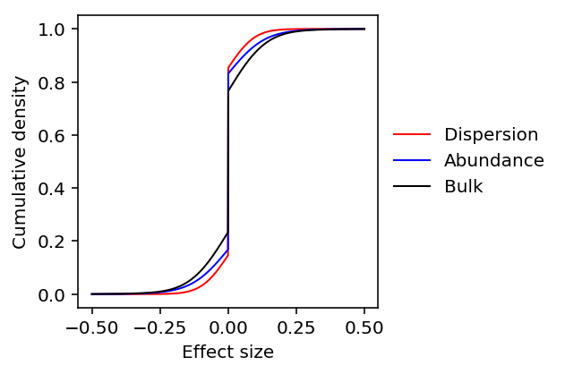
Run nominal passes on variance phenotypes.
sbatch --partition=broadwl -n1 -c28 --exclusive --job-name=nominal --out nominal.out --time=60:00 #!/bin/bash source activate scqtl
Submitted batch job 47405002
Fit mash.
def fit_mash(df, g=None): betahat = df.iloc[:,:df.shape[1] // 2] se = df.iloc[:,df.shape[1] // 2:] data = mashr.mash_set_data(betahat, se) U = mashr.cov_canonical(data) if g is None: V = mashr.estimate_null_correlation(data) data = mashr.mash_set_data(betahat, se, V=V) return mashr.mash(data, U, verbose=True) else: return mashr.mash(data, verbose=True, fixg=True, g=g) def train_test_split(betahat, se, train_subsample=10, test_thresh=9): df = pd.DataFrame(np.concatenate([betahat, se], axis=-1)) training_set = df.groupby(stats[0]['gene']).apply(downsample, n=train_subsample) test_set = df[(np.square(betahat / se) > test_thresh).any(axis=1)] return training_set, test_set def get_pairwise_sharing(stats): common = functools.reduce(lambda x, y: x.merge(y, on=['id', 'gene'], how='inner')[['id', 'gene']], stats) betahat = np.vstack([s.merge(common, on=['id', 'gene'], how='inner')['beta'] for s in stats]).T se = np.vstack([s.merge(common, on=['id', 'gene'], how='inner')['se'] for s in stats]).T training_set, test_set = train_test_split(betahat, se) mash_result0 = fit_mash(training_set) mash_result1 = fit_mash(test_set, g=mash_result0.rx2('fitted_g')) return np.array(mashr.get_pairwise_sharing(mash_result1))
stats = [pd.read_table('/scratch/midway2/aksarkar/singlecell/power/{}.txt.gz'.format(f)).rename(columns={'Unnamed: 0': 'id'}) for f in ('bulk', 'log_mu','variance','fano','cv')] # Bulk gene names need to be munged stats[0]['gene'] = [x.split('.')[0] for x in stats[0]['gene']] # CV effect sizes are expected to be anti-correlated to all others stats[-1]['beta'] *= -1
res = get_pairwise_sharing(stats)
array([[1. , 0.94283656, 0.94073996, 0.94026625, 0.94153343], [0.94283656, 1. , 0.99865977, 0.9935249 , 0.97356074], [0.94073996, 0.99865977, 1. , 0.9997103 , 0.9710184 ], [0.94026625, 0.9935249 , 0.9997103 , 1. , 0.97188708], [0.94153343, 0.97356074, 0.9710184 , 0.97188708, 1. ]])
pd.options.display.float_format = '{:.3g}'.format ticks = ['Bulk', 'Abundance', 'Variance', 'Fano', 'CV'] pd.DataFrame(100 * res, columns=ticks, index=ticks)
Bulk Abundance Variance Fano CV Bulk 100 94.3 94.1 94 94.2 Abundance 94.3 100 99.9 99.4 97.4 Variance 94.1 99.9 100 100 97.1 Fano 94 99.4 100 100 97.2 CV 94.2 97.4 97.1 97.2 100
Compare experimental variance to biological variance
Let \hat{\theta}i be an estimate of some phenotype \(\theta_i\). Assume:
\[ \hat{\theta}_i = \theta_i + u_i \]
where \(u_i\) is a random effect capturing experimental noise, finite sampling variance, and estimator sampling variance.
Above, we estimated the scale of the finite sampling variance and estimator sampling variance. Here, we relate it to the genetic variance.
Extract the genotypes and UMI counts.
def parse_vcf_dosage(record): geno = [float(g) for g in record[9:]] return pd.Series(geno) def extract_geno(qtls, dosages): header = pd.read_table(dosages, skiprows=2, nrows=1, header=0).columns[9:] genotypes = tabix.open(dosages) X = np.round( qtls .apply(lambda x: parse_vcf_dosage(next(genotypes.query(x['chr'], int(x['var_start']) - 1, int(x['var_start'])))), axis=1) .rename(columns={i: ind for i, ind in enumerate(header)})) return X def extract_counts(qtls, counts): X = pd.concat( [chunk.align(qtls, axis='index', join='inner')[0] for chunk in pd.read_table(counts, index_col=0, chunksize=1000)]) return X def sample_counts(counts, n): X = pd.concat( [chunk.sample(n=n) for chunk in pd.read_table(counts, index_col=0, chunksize=1000)]) return X
Read the data.
qtls = (pd.read_table('/project2/mstephens/aksarkar/projects/singlecell-qtl/data/scqtl-mapping/mean.txt.gz', sep=' ', index_col=0) .sample(n=200, random_state=1)) annotations = pd.read_table('/project2/mstephens/aksarkar/projects/singlecell-qtl/data/scqtl-annotation.txt') keep_samples = pd.read_table('/project2/mstephens/aksarkar/projects/singlecell-qtl/data/quality-single-cells.txt', index_col=0, header=None)
Extract the subset we want.
counts = extract_counts(qtls, '/project2/mstephens/aksarkar/projects/singlecell-qtl/data/scqtl-counts.txt.gz') annotations = annotations.loc[keep_samples.values.ravel()].reset_index(drop=True) counts = counts.loc[:,keep_samples.values.ravel()]
Bootstrap the subset.
def bootstrap(counts, annotations): idx = np.hstack({k: np.random.choice(g, size=len(g)) for k, g in annotations.groupby('chip_id').groups.items()}.values()) return counts.iloc[:,idx], annotations.iloc[idx]
Recover the derived mean and variance.
Compare the phenotypic variance of mean against dispersion. Use squared coefficient of variation to get dimensionless quantities.
scv = pd.Series(np.square(st.variation(mean_by_ind, axis=1)) / np.square(st.variation(log_phi, axis=1)))
scv.describe()
count 9957.000000 mean 0.388954 std 0.537197 min 0.000067 25% 0.164379 50% 0.267103 75% 0.459509 max 25.724706 dtype: float64
plt.clf() plt.gcf().set_size_inches(3, 3) plt.semilogx() plt.semilogy() all_qtls = (pd.read_table('/project2/mstephens/aksarkar/projects/singlecell-qtl/data/scqtl-mapping/mean.txt.gz', sep=' ', index_col=0) .sort_values('p_beta') .head(n=241)) plt.scatter(np.square(st.variation(mean_by_ind, axis=1)), np.square(st.variation(log_phi, axis=1)), s=2, c='.75', label='Not eQTL') plt.scatter(np.square(st.variation(mean_by_ind.loc[all_qtls.index], axis=1)), np.square(st.variation(log_phi.loc[all_qtls.index], axis=1)), s=2, c='k', label='eQTL') plt.plot(plt.xlim(), plt.xlim(), c='r', ls=':') plt.legend(frameon=False, markerscale=2, handletextpad=0) plt.xlabel('SCV of mean') _ = plt.ylabel('SCV of $\ln(\phi)$')
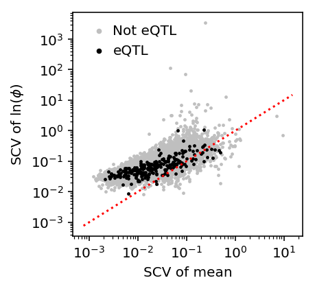
Partition the sum of squares.
def ss(y): return np.square(y - y.mean()).sum() def partition(x, y): total = ss(y) within = y.groupby(x.values).apply(ss).sum() between = total - within return total, between, within geno = extract_geno(qtls, '/scratch/midway2/aksarkar/singlecell/scqtl-mapping/yri-120-dosages.vcf.gz') geno = geno.loc[:,list(set(annotations['chip_id']))] X, Y = geno.align(mean_by_ind, join='inner') var_comps = pd.DataFrame([partition(X.loc[i], Y.loc[i]) for i in Y.index]) var_comps.index = X.index var_comps.columns = ['total', 'between', 'within']
Look at the ANOVA for weak eQTLs.
var_comps.tail()
total between within gene ENSG00000163961 3.681769e-10 9.298483e-11 2.751920e-10 ENSG00000151806 1.530030e-10 5.271346e-11 1.002895e-10 ENSG00000116260 3.854593e-10 6.561917e-11 3.198401e-10 ENSG00000109775 3.234854e-10 1.171794e-10 2.063060e-10 ENSG00000164758 2.571498e-10 7.245402e-11 1.846958e-10
Compare against the estimated sampling variance from the simulation.
data[np.logical_and(data['num_samples'] == 95, data['num_mols'] == 114026)]['latent_mean_hat'].describe()
count 8.000000e+01 mean 9.264424e-09 std 2.667586e-08 min 1.169715e-11 25% 1.685388e-10 50% 9.926134e-10 75% 4.742833e-09 max 1.403023e-07 Name: latent_mean_hat, dtype: float64
Estimate bootstrap SEs on a GPU.
<<zinb-imports>> <<tf-imports>> import tabix import scipy.linalg as sl <<tf-zinb-impl>> <<recode-impl>> <<extract-impl>> <<bootstrap-impl>> <<read-qtls>> <<extract-counts>> log_mu = pd.read_table('/project2/mstephens/aksarkar/projects/singlecell-qtl/data/density-estimation/design1/zi2-log-mu.txt.gz', index_col=0, sep=' ').align(counts, axis='index', join='inner')[0] log_phi = pd.read_table('/project2/mstephens/aksarkar/projects/singlecell-qtl/data/density-estimation/design1/zi2-log-phi.txt.gz', index_col=0, sep=' ').align(counts, axis='index', join='inner')[0] logodds = pd.read_table('/project2/mstephens/aksarkar/projects/singlecell-qtl/data/density-estimation/design1/zi2-log-mu.txt.gz', index_col=0, sep=' ').align(counts, axis='index', join='inner')[0] results = [] for trial in range(100): C, A = bootstrap(counts, annotations) onehot = recode(annotations, 'chip_id') chip = recode(annotations, 'experiment') chip -= chip.mean(axis=0) results.append(fit( umi=C.values.T.astype(np.float32), onehot=onehot.astype(np.float32), design=chip.astype(np.float32), size_factor=annotations['mol_hs'].astype(np.float32).values.reshape(-1, 1), warm_start=(log_mu.values.T.astype(np.float32), log_phi.values.T.astype(np.float32), logodds.values.T.astype(np.float32)), learning_rate=5e-2, max_epochs=1000)) estimates = { 'mean': np.array([np.exp(r[0] - np.log1p(np.exp(r[2]))) for r in results]), 'log_mean': np.array([r[0] - np.log1p(np.exp(r[2])) for r in results]), 'disp': np.array([r[1] for r in results]) } for k in estimates: (pd.DataFrame(estimates[k].var(axis=0).T, columns=sorted(set(annotations['chip_id'])), index=counts.index) .to_csv('/scratch/midway2/aksarkar/singlecell/power/{}-se.txt.gz'.format(k), sep='\t', compression='gzip'))
sbatch --partition=gpu2 --gres=gpu:1 --mem=16G --job-name=tf-zinb-se --out=tf-zinb-se.out #!/bin/bash source activate scqtl python /project2/mstephens/aksarkar/projects/singlecell-qtl/code/tf-zinb-se.py
Submitted batch job 49257820
Read the results.
mean_sampling_var = pd.read_table('/scratch/midway2/aksarkar/singlecell/power/mean-se.txt.gz', index_col=0) disp_sampling_var = pd.read_table('/scratch/midway2/aksarkar/singlecell/power/disp-se.txt.gz', index_col=0)
Estimate the reduction in effective PVE for eQTLs.
S, M = mean_sampling_var.align(mean_by_ind, join='inner', axis='index') pd.DataFrame({'prop': S.mean(axis=1) / M.var(axis=1), 'factor': M.var(axis=1) / np.ma.masked_less((M.var(axis=1) - S.mean(axis=1)).values, 0)}).describe()
factor prop count 75.000000 100.000000 mean 3.365234 0.698366 std 4.746555 0.407146 min 1.109361 0.098580 25% 1.458076 0.380033 50% 2.043664 0.626091 75% 3.229525 0.978929 max 34.946118 2.004026
Estimate how many more cells would be required so the median factor is 1.1.
\[ (\sigma^2_y + \sigma^2_u) / \sigma^2_y \leq 1.1 \]
\[ \sigma^2_u \leq .1 \sigma^2 y \]
(S.mean(axis=1) / (.1 * np.ma.masked_less((M.var(axis=1) - S.mean(axis=1)).values, 0))).describe()
count 75.000000 mean 23.652338 std 47.465547 min 1.093611 25% 4.580756 50% 10.436642 75% 22.295255 max 339.461176 dtype: float64
(M.var(axis=1) / np.ma.masked_less((M.var(axis=1) - S.mean(axis=1) / 2.82).values, 0)).describe()
count 100.000000 mean 1.398247 std 0.388211 min 1.036224 25% 1.155754 50% 1.285377 75% 1.531795 max 3.455993 dtype: float64
Do the same for dQTLs.
S, M = disp_sampling_var.align(log_phi, join='inner', axis='index') pd.DataFrame({'prop': S.mean(axis=1) / M.var(axis=1), 'factor': M.var(axis=1) / np.ma.masked_less((M.var(axis=1) - S.mean(axis=1)).values, 0)}).describe()
factor prop count 92.000000 100.000000 mean 2.346648 0.383063 std 3.382984 0.342855 min 1.041327 0.039686 25% 1.117332 0.108174 50% 1.281986 0.228490 75% 1.914243 0.636540 max 23.984483 1.541178
(S.mean(axis=1) / (.1 * np.ma.masked_less((M.var(axis=1) - S.mean(axis=1)).values, 0))).describe()
count 92.000000 mean 13.466479 std 33.829841 min 0.413266 25% 1.173316 50% 2.819856 75% 9.142426 max 229.844830 dtype: float64
Distribution of PVE
We can use shrunk marginal effect size estimates to bound the proportion of phenotypic variance explained. We claim:
\[ h^2 \geq \arg\max_j E[\beta_j \mid \hat\beta]^2 \]
Frequentist argument. If the maximizer \(j\) is causal, this is a lower bound on PVE because \(h^2 = \sum_k \beta_k^2\) and other variants \(k\) could be causal, and because the estimate is shrunk towards zero.
If it is not causal, then the true marginal effect size is \(\sum_i R_{ij} \beta_i\), where \(R_{ij} = \mathrm{Corr}(X_i, X_j)\). \(R_ij \leq 1\), so this is still a lower bound
Bayesian argument.
\[ h^2 \geq \beta_j^2 \text{ for all \(j\)} \]
\[ E[h^2 \mid \hat\beta] \geq E[\beta_j^2 \mid \hat\beta] \text{ for all \(j\)} \]
\[ E[h^2 \mid \hat\beta] \geq \arg\max_j E[\beta_j^2 \mid \hat\beta] \]
def get_pve(summary_stats, ash_result): res = ashr.ash(summary_stats['beta'], summary_stats['se'], fixg=True, g=ash_result.rx2('fitted_g')) pve = np.square(pd.Series(np.square(ashr.get_psd(res)) + ashr.get_pm(res), index=summary_stats['gene'])) return pve.groupby(level=0).agg(max)
<<power-imports>> <<downsample-impl>> <<get-pve-impl>> np.random.seed(0) stats = {x: (pd.read_table('/scratch/midway2/aksarkar/singlecell/power/{}.txt.gz'.format(x)) .groupby('gene') .agg(lambda x: x.loc[x['beta'].idxmax()]) .reset_index()) for x in ('log_phi', 'mean', 'bulk', 'resid', 'cv_resid')} # Munge gene names in bulk summary statistics stats['bulk']['gene'] = [x.split('.')[0] for x in stats['bulk']['gene']] with open('/scratch/midway2/aksarkar/singlecell/power/ash-results.pkl', 'rb') as f: ash_results = pickle.load(f) (pd.DataFrame({k: get_pve(v, ash_results[k]) for k, v in stats.items()}) .to_csv('estimated-pve.txt.gz', sep='\t', compression='gzip'))
sbatch --partition=broadwl --time=10:00 --mem=4G -n1 -c28 --exclusive --job-name estimate-pve --out estimate-pve.out #!/bin/bash source activate scqtl python /project2/mstephens/aksarkar/projects/singlecell-qtl/code/estimate-pve.py
Submitted batch job 47546035
Read the results.
estimated_pve = pd.read_table('/scratch/midway2/aksarkar/singlecell/power/estimated-pve.txt.gz', index_col=0) estimated_pve.columns = ['Bulk', 'CV residual', 'Dispersion', 'Mean', 'Residual'] estimated_pve = estimated_pve[['Dispersion', 'Mean', 'Bulk', 'Residual', 'CV residual']]
plt.clf() plt.gcf().set_size_inches(3, 3) M = 0.1 grid = np.linspace(0, M, 100) for k, c in zip(estimated_pve, ['r', 'b', 'k']): f = st.gaussian_kde(estimated_pve[k].dropna()) plt.plot(grid, f(grid), c=c, lw=1, label=k) plt.fill_between(grid, f(grid), color=c, alpha=0.1) plt.legend(frameon=False) plt.xlim(0, M) plt.ylim(0, plt.ylim()[1]) plt.xlabel('Proportion of variance explained') plt.ylabel('Density')
Text(0,0.5,'Density')
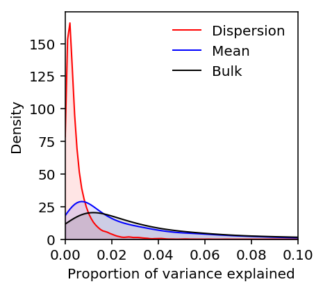
Plot the PVE of vQTLs/CV-QTLs after regressing out the mean.
plt.clf() plt.gcf().set_size_inches(3, 3) M = 0.1 grid = np.linspace(0, M, 100) for k, c in zip(['Dispersion', 'Residual', 'CV residual'], ['r', 'purple', 'orange']): f = st.gaussian_kde(estimated_pve[k].dropna()) plt.plot(grid, f(grid), c=c, lw=1, label=k) plt.fill_between(grid, f(grid), color=c, alpha=0.1) plt.legend(frameon=False) plt.xlim(0, M) plt.ylim(0, plt.ylim()[1]) plt.xlabel('Proportion of variance explained') plt.ylabel('Log density')
Text(0,0.5,'Log density')
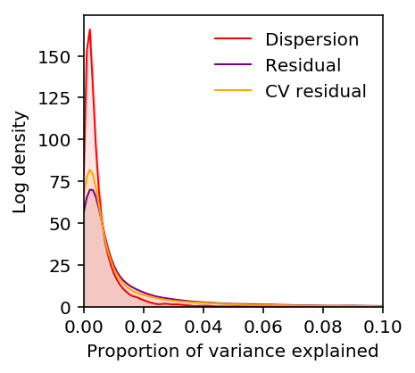
Plot the expected density of mean expression PVE assuming measurement noise from the simulation.
(estimated_pve['Mean'] / estimated_pve['Bulk']).describe()
count 8462.000000 mean 1.587743 std 3.075250 min 0.002746 25% 0.268501 50% 0.672904 75% 1.638187 max 62.349105 dtype: float64
plt.clf() plt.gcf().set_size_inches(3, 3) M = 0.1 grid = np.linspace(0, M, 100) f0 = st.gaussian_kde(estimated_pve['Bulk'].dropna()) plt.plot(grid, f0(grid), c='b', lw=1, label='Bulk') plt.fill_between(grid, f0(grid), color='b', alpha=0.1) f1 = st.gaussian_kde(.67 * estimated_pve['Bulk'].dropna()) plt.plot(grid, f1(grid), c='c', lw=1, label='Bulk + noise') plt.fill_between(grid, f1(grid), color='c', alpha=0.1) f2 = st.gaussian_kde(estimated_pve['Mean'].dropna()) plt.plot(grid, f2(grid), c='k', lw=1, label='SC') plt.fill_between(grid, f2(grid), color='k', alpha=0.1) plt.legend(frameon=False) plt.xlim(0, M) plt.ylim(0, plt.ylim()[1]) plt.xlabel('Proportion of variance explained') plt.ylabel('Density')
Text(0,0.5,'Density')
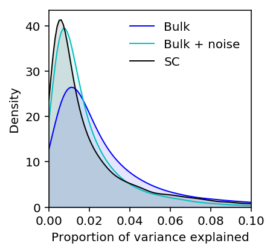
Estimate the proportion of large effect dQTLs.
f = st.gaussian_kde(estimated_pve['Dispersion'].dropna()) si.quad(f, .01, 1)
(0.06961646614211667, 4.412386762494795e-09)
Estimate the same for eQTLs.
f = st.gaussian_kde(estimated_pve['Bulk'].dropna()) si.quad(f, 0.01, 1)
(0.7296000671917134, 1.95708035203864e-12)
Compare the distribution of PVE for iPSCs against DGN whole blood (Wheeler et al 2016). The results are available on github.
import sqlite3 with sqlite3.connect('/project2/mstephens/aksarkar/.local/src/GenArchDB/genarch.db') as conn: dgn_pve = pd.read_sql('select * from results where tissue == "DGN-WB";', conn) gtex_pve = pd.read_sql('select * from results where tissue == "WholeBlood_TW" and pve != "NA";', conn)
plt.clf() plt.gcf().set_size_inches(3, 3) M = 0.1 grid = np.linspace(0, 1, 100) f0 = st.gaussian_kde(estimated_pve['Bulk'].dropna()) plt.plot(grid, f0(grid), c='k', lw=1, label='iPSC') plt.fill_between(grid, f0(grid), color='k', alpha=0.1) f1 = st.gaussian_kde(dgn_pve['pve'].dropna()) plt.plot(grid, f1(grid), c='g', lw=1, label='Whole blood (DGN)') plt.fill_between(grid, f1(grid), color='g', alpha=0.1) f2 = st.gaussian_kde(gtex_pve['pve'].dropna()) plt.plot(grid, f2(grid), c='c', lw=1, label='Whole blood (GTEx)') plt.fill_between(grid, f2(grid), color='c', alpha=0.1) plt.legend(frameon=False) plt.xlim(0, 1) plt.ylim(0, plt.ylim()[1]) plt.xlabel('Proportion of variance explained') plt.ylabel('Density')
Text(0,0.5,'Density')
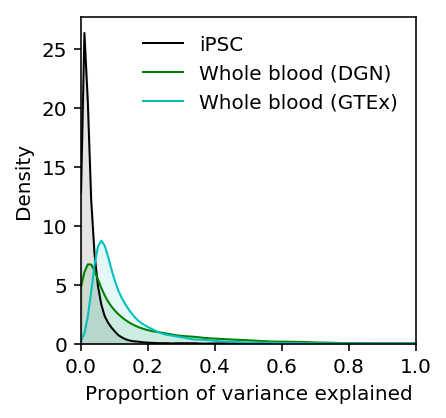
Compute the expected power over the estimated distribution of PVE.
def average_power(g, f): x = g['pve'] return si.trapz(g['power'] * f(x), x)
Estimate the distribution of effective PVE by correcting for the median reduction in PVE (at the current experiment size), and then assuming a large enough experiment to only reduce effective PVE by 10%..
f = st.gaussian_kde(.9 * estimated_pve['Bulk'].dropna())
Estimate the average power as a function of the number of individuals and number of causal variants.
(qtl_power.groupby(['num_individuals', 'num_causal']).apply(average_power, f=f)).reset_index()
num_individuals num_causal 0 0 53 -1.0 0.067524 1 53 1.0 0.078898 2 100 -1.0 0.104900 3 100 1.0 0.114457 4 200 -1.0 0.152676 5 200 1.0 0.201122 6 300 -1.0 0.250451 7 300 1.0 0.280708 8 400 -1.0 0.276784 9 400 1.0 0.303322
Repeat the analysis for dQTLs.
(qtl_power.groupby(['num_individuals', 'num_causal']).apply(average_power, f=st.gaussian_kde(estimated_pve['Dispersion'].dropna() * .9 * 1.28))).reset_index()
num_individuals num_causal 0 0 53 -1.0 0.008282 1 53 1.0 0.007657 2 100 -1.0 0.014693 3 100 1.0 0.015392 4 200 -1.0 0.016902 5 200 1.0 0.018266 6 300 -1.0 0.029801 7 300 1.0 0.031696 8 400 -1.0 0.030865 9 400 1.0 0.037992
Estimate the error variance
The single cell experiment size determines the standard error of the estimator, which can be thought of as measurement error.
\[ \hat\theta \sim N(\theta, \sigma^2) \]
This is the same as changing effective PVE:
\[ h^2_{\mathrm{eff}} = \frac{h^2}{1 + \sigma^2} \]
We estimate the standard error as a function of the experiment size from the simulation.
sim_results = pd.read_table('/scratch/midway2/aksarkar/singlecell/density-estimation/simulation.txt.gz', index_col=0) sim_results['latent_mean'] = np.exp(sim_results['log_mu'] - np.log1p(np.exp(sim_results['logodds']))) sim_results['latent_mean_hat'] = np.exp(sim_results['log_mu_hat'] - np.log1p(np.exp(sim_results['logodds_hat']))) sim_results['latent_var'] = np.exp(2 * sim_results['log_mu'] + sim_results['log_phi'] - np.log1p(np.exp(sim_results['logodds']))) + np.exp(-np.log1p(np.exp(sim_results['logodds'])) - np.log1p(np.exp(-sim_results['logodds'])) + 2 * sim_results['log_mu']) sim_results['latent_var_hat'] = np.exp(2 * sim_results['log_mu_hat'] + sim_results['log_phi_hat'] - np.log1p(np.exp(sim_results['logodds_hat']))) + np.exp(-np.log1p(np.exp(sim_results['logodds_hat'])) - np.log1p(np.exp(-sim_results['logodds_hat'])) + 2 * sim_results['log_mu_hat']) mu_pass = sim_results['log_mu'] > -10 pi_pass = sim_results['logodds'] <= 0
Restrict the analysis to \(\ln\mu > -10, \mathrm{logit}(\pi) < 0\), because this is the part of the parameter space we can reliably estimate in.
data = sim_results[np.logical_and(mu_pass, pi_pass)].groupby(['num_samples', 'num_mols', 'latent_mean', 'latent_var'])[['latent_mean_hat', 'latent_var_hat']].agg(np.var).reset_index()
For \(x_1, \ldots, x_n \sim N(\mu, \sigma^2)\), we know:
\[ \bar{x} \sim N(\mu, \sigma^2 / n) \]
So a priori, we might expect the sampling variance of the single cell latent mean to decrease as \(1 / n\).
Similarly, we know:
\[ (n - 1)S^2 / \sigma^2 \sim \chi^2(n - 1) \]
Therefore,
\[ V[S^2] = 2 (n - 1) sigma^4 / (n - 1)^2 \]
And a priori, we might also expect the sampling variance of the single cell latent variance to decrease as \(1 / n\).
From the parametric simulation, we can estimate these relationships directly by fitting multiplicative models.
def mlm(x, y): x -= x.mean(axis=0) y -= y.mean() beta = np.linalg.pinv(x).dot(y) rss = np.square(y - x.dot(beta)).sum() sigma2 = rss / (y.shape[0] - 1) se = np.sqrt(sigma2 / np.einsum('ij,ij->j', x, x)) return beta, se def ci(beta, se): return np.array([beta + 1.96 * se, beta - 1.96 * se]).reshape(2, -1).T
ci(*mlm(np.log(data[['num_samples', 'num_mols', 'latent_mean', 'latent_var']]), np.log(data['latent_mean_hat'])))
array([[-0.9984868 , -1.03276978], [-0.01299114, -0.08496202], [-0.01580837, -0.07270787], [ 1.01267559, 0.98504366]])
ci(*mlm(np.log(data[['num_samples', 'num_mols', 'latent_mean', 'latent_var']]), np.log(data['latent_var_hat'])))
array([[-0.94347526, -1.02803879], [-0.07134441, -0.24887015], [ 0.26219289, 0.12184272], [ 1.92936491, 1.86120709]])
Analytic power calculation
We assume the generative process:
\[ y_i = x_i b + e_{\mathrm{resid}} \]
where \(y_i\) is the phenotype of individual \(i\), \(x_i\) is the genotype at the SNP of interest, and \(e_{\mathrm{resid}} \sim N(0, \sigma^2_r)\)
We observe \(y_i\) with error:
\[ \tilde{y}_i = y_i + e_{\mathrm{meas},i} \]
where \(e_{\mathrm{meas},i} \sim N(0, \sigma^2_m)\).
To perform QTL mapping, we fit a regression model:
\[ \tilde{y}_i = x_i \beta + \epsilon_i \]
where \(\epsilon_i \sim N(0, \sigma^2)\).
Assuming \(V[x] = 1\), we have:
\[\hat\beta \sim \mathcal{N}\left(b, \frac{\sigma^2_r + \sigma^2_m}{n}\right) \]
where \(n\) is the number of individuals.
Assume \(b = \lambda \sigma_r\), \(\lambda > 0\), and define \(\delta = \sigma^2_m / \sigma^2_r\) as the noise ratio. Then, the power at level \(\alpha\) is:
\[ \mathrm{Pow}(\lambda, n, \delta, \alpha) = p\left(\hat\beta > -\sigma_r \sqrt{\frac{1 + \delta}{n}} \Phi^{-1}\left(\frac{\alpha}{2}\right)\right) \]
\[ = \Phi\left(\Phi^{-1}\left(\frac{\alpha}{2}\right) + \lambda\sqrt{\frac{n}{1 + \delta}}\right) \]
where \(\Phi(\cdot)\) denotes the standard Gaussian CDF.
N = st.norm() def power(lam, n, delta, alpha): return N.cdf(N.ppf(alpha / 2) + lam * np.sqrt(n / (1 + delta)))
Now, we need to answer the following questions:
- What is the typical effect size?
- What is the typical noise ratio of the current study?
- How does the noise ratio vary with the number of cells and number of molecules?
Estimating the effect size distribution
To answer (1), we need to apply ash. To make effect sizes comparable
between mean and dispersion, we need effect sizes in units of natural log
fold change.
Compute effect sizes and standard errors.
<<power-imports>> <<eqtl-sim-impl>> <<write-pheno-def>> <<nominal-pass-def>> vcf = tabix.open('/scratch/midway2/aksarkar/singlecell/scqtl-mapping/yri-120-dosages.vcf.gz') header = pd.read_table('/scratch/midway2/aksarkar/singlecell/scqtl-mapping/yri-120-dosages.vcf.gz', skiprows=2, nrows=1, header=0).columns[9:] <<point-gamma-moments>> <<get-gene-info>> log_phi = (gene_info .apply(qtltools_format, axis=1) .merge(log_phi, left_index=True, right_index=True)) mean_by_ind = (gene_info .apply(qtltools_format, axis=1) .merge(np.log(mean_by_ind), left_index=True, right_index=True)) run_nominal_pass(vcf, log_phi, header, std=False).to_csv('disp.txt.gz', sep='\t', compression='gzip') run_nominal_pass(vcf, mean_by_ind, header, std=False).to_csv('mean.txt.gz', sep='\t', compression='gzip')
sbatch --partition=broadwl -n1 -c28 --exclusive --job-name=nominal --out=nominal.out --time=60:00 #!/bin/bash source activate scqtl python /project2/mstephens/aksarkar/projects/singlecell-qtl/code/nominal-log-fc.py
Submitted batch job 49000296
Fit ash.
ash_results = {x: fit_ash('/scratch/midway2/aksarkar/singlecell/power/analytic/{}.txt.gz'.format(x)) for x in ('mean', 'disp')}
Serialize the results.
with open('fold-change-ash-results.pkl', 'wb') as f: pickle.dump(ash_results, f)
Read the results.
with open('fold-change-ash-results.pkl', 'rb') as f: ash_results = pickle.load(f)
Look at the fitted \(g\).
plt.clf() plt.gcf().set_size_inches(3, 3) grid = np.linspace(-.25, .25, num=1000) for k, c, l in zip(['disp', 'mean'], ['r', 'k'], ['Dispersion', 'Mean']): y = np.array(ashr.cdf_ash(ash_results[k], grid).rx2('y')).ravel() plt.plot(grid, y, c=c, lw=1, label=l) plt.xlabel('Effect size') plt.ylabel('Cumulative density') plt.legend(frameon=False, loc='center left', bbox_to_anchor=(1, .5))
<matplotlib.legend.Legend at 0x7f104f95c2b0>
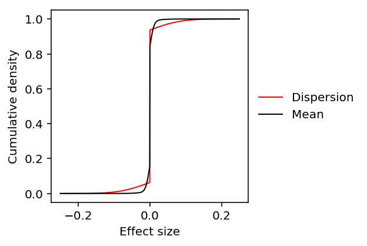
Look at the tail behavior of \(g\).
plt.clf() plt.gcf().set_size_inches(3, 3) plt.semilogx() grid = np.logspace(-3, 0, num=1000) for k, c, l in zip(['disp', 'mean'], ['r', 'k'], ['Dispersion', 'Mean']): y = np.array(ashr.cdf_ash(ash_results[k], grid).rx2('y')).ravel() plt.plot(grid, y, c=c, lw=1, label=l) plt.axhline(y=1, c='k', lw=1, ls=':') plt.xlabel('Effect size') plt.ylabel('Cumulative density') _ = plt.legend(frameon=False, loc='center left', bbox_to_anchor=(1, .5))
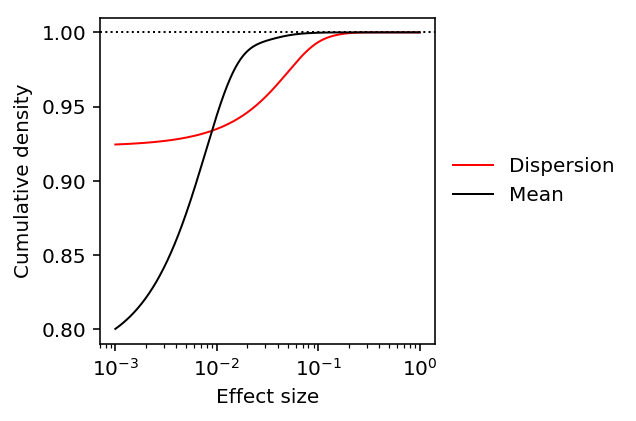
Get the effect size by percentile in the prior distribution.
def get_effect_size(ash_result, perc): grid = np.linspace(-.25, .25, 1000) return grid[np.where(np.array(ashr.cdf_ash(ash_result, grid).rx2('y')).ravel() > perc)][0]
mean_effect = get_effect_size(ash_results['mean'], .99) mean_effect
0.022772772772772787
disp_effect = get_effect_size(ash_results['disp'], .99) disp_effect
0.08533533533533533
Estimating measurement error and residual variance
To answer (2), we need to estimate \(\sigma^2_m\) and \(\sigma^2_r\).
One complication is that we actually have \(e_{\mathrm{meas},i} \sim N(0, \sigma^2_{mi})\). We estimate \(\sigma^2_{mi}\) via non-parametric bootstrap for 200 randomly chosen genes.
sbatch --partition=gpu2 --gres=gpu:1 --mem=16G --job-name=tf-zinb-se --out=tf-zinb-se.out #!/bin/bash source activate scqtl python /project2/mstephens/aksarkar/projects/singlecell-qtl/code/tf-zinb-se.py
Submitted batch job 49278176
Read the results.
log_mean_sampling_var = pd.read_table('/scratch/midway2/aksarkar/singlecell/power/log_mean-se.txt.gz', index_col=0) disp_sampling_var = pd.read_table('/scratch/midway2/aksarkar/singlecell/power/disp-se.txt.gz', index_col=0)
Naive approach
Assuming that \(\hat\sigma^2_{mi}\) is unbiased, \(\hat\sigma^2_r = \frac{1}{n - 1}\sum_i (\tilde{y}_i - \bar{y})^2 - \frac{1}{n}\sum_i \hat\sigma^2_{mi}\) is also unbiased (Buonaccorsi 2010, Eq. 10.1).
However, it can happen that \(\hat\sigma^2_r \leq 0\). We need the ratio \(\hat\sigma^2_m / \hat\sigma^2_r\) so this strategy may not work in general.
sigma2_m_mean = log_mean_sampling_var.median(axis=1).median() sigma2_r_mean = (np.log(mean_by_ind).var(axis=1) - log_mean_sampling_var.median(axis=1)).median() sigma2_m_mean, sigma2_r_mean
(0.01676837475, 0.0038333371434518104)
sigma2_m_disp = disp_sampling_var.median(axis=1).median() sigma2_r_disp = (log_phi.var(axis=1) - disp_sampling_var.median(axis=1)).median() sigma2_m_disp, sigma2_r_disp
(0.34478114000000004, 0.10712427518144693)
Compare the phenotypic standard deviations.
np.sqrt(sigma2_r_disp) / np.sqrt(sigma2_r_mean)
5.286344229674782
Estimate the typical noise ratios.
delta_mean = sigma2_m_mean / sigma2_r_mean delta_disp = sigma2_m_disp / sigma2_r_disp delta_mean, delta_disp
(4.374354282571805, 3.218515499087488)
Deconvolution approach
We can also use ash and vash (Lu and Stephens 2016) to solve the problem.
\[ \tilde{y}_i \mid y_i, \sigma^2_{mi} \sim \mathcal{N}(y_i, \sigma^2_{mi}) \]
We are primarily interested in the typical \(\sigma^2_r\) over all genes, rather than estimating \(y_i\) for each gene. Therefore, assume the observations \(\tilde{y}_i\) are centered to have mean 0 and jointly analyze observations across all genes, assuming a common prior.
\[ y_i \mid \hat\sigma^2_{mi} \sim g(\cdot) \]
where \(g\) is a unimodal mixture of uniforms.
Cordy and Thomas 1997 developed the same approach assuming \(\sigma^2_{mi} = \hat\sigma^2_{mi}\).
To estimate the typical \(\sigma^2_m\) over all genes, we could instead assume a hierarchical model on \(\hat\sigma^2_{mi}\).
\[ \hat\sigma^{2}_{mi} \mid \sigma^2_{mi}, \nu_i \sim \mathrm{Gamma}(\cdot) \]
where \(\nu_i\) denotes the degrees of freedom for observation \(i\).
\[ \sigma^{-2}_{mi} \sim h(\cdot) \]
where \(h\) is a unimodal mixture of inverse Gamma distributions.
Let \(\tilde\sigma^2_{mi} = 1 / E[\sigma^{-2}_{mi} \mid \cdot]\), and let \(\tilde{\nu}_i\) denote the posterior mean degrees of freedom. Then,
\[ \tilde{y}_i \mid y_i, \tilde\sigma^2_{mi}, \tilde{\nu}_i \sim t(y_i, \tilde\sigma^2_{mi}, \tilde{\nu}_i) \]
where \(t(\cdot)\) denotes the generalized \(t\) distribution.
Although it would be ideal to jointly estimate \(g\), \(h\), we can take a simpler approach:
- Given \(\hat\sigma^2_{mi}, \nu_i\), use
vashto estimate \(h\), \(\tilde\sigma^2_{mi}\), \(\tilde\nu_i\) - Given \(\tilde{y}_i\), \(\tilde\sigma^2_{mi}\), \(\tilde\nu_i\), use
ashto estimate \(g\)
Then, the required variances are:
\[ \hat\sigma^2_r = V_g[y_i] \]
\[ \hat\sigma^2_m = 1 / E_h[\sigma^{-2}_{mi}] \]
def estimate_variances(y, se): y, se = y.align(se, join='inner') vash_res = vashr.vash(se.melt()['value'], df=y.shape[1] - 1, unimodal='precision') h = vash_res.rx2('fitted.g') pi = np.array(h.rx2('pi')) sigma2_m = pi.dot(ashr.comp_mean(h)) # The observed df is equal for all observations, so the posterior mean df # will also be equal for all observations (Lu and Stephens 2016, eq. 13) df = 2 * np.array(vash_res.rx2('PosteriorShape')).dot(pi)[0] y = y.transform(lambda x: x - x.mean(), axis=1) lik = ashr.lik_t(df) res = ashr.ash(y.melt()['value'], vash_res.rx2('sd.post'), method='shrink', mixcompdist='uniform', lik=lik) g = res.rx2('fitted_g') sigma2_r = np.array(g.rx2('pi')).dot(np.square(np.array(g.rx2('b')) - np.array(g.rx2('a'))) / 12) return sigma2_m, sigma2_r
sigma2_m_mean, sigma2_r_mean = estimate_variances(np.log(mean_by_ind), np.sqrt(log_mean_sampling_var)) sigma2_m_mean, sigma2_r_mean
(0.04015464910541205, 0.010743676492444657)
sigma2_m_disp, sigma2_r_disp = estimate_variances(log_phi, np.sqrt(disp_sampling_var)) sigma2_m_disp, sigma2_r_disp
(0.4100403252289386, 0.24894528053223766)
Serialize the results.
with open('deconvolution-results.pkl', 'wb') as f: pickle.dump((sigma2_m_mean, sigma2_r_mean, sigma2_m_disp, sigma2_r_disp), f)
Read the results.
with open('deconvolution-results.pkl', 'rb') as f: sigma2_m_mean, sigma2_r_mean, sigma2_m_disp, sigma2_r_disp = pickle.load(f)
Compare the phenotypic standard deviations.
np.sqrt(sigma2_r_disp) / np.sqrt(sigma2_r_mean)
4.813660837867881
Finally, get the typical noise ratios.
delta_mean = sigma2_m_mean / sigma2_r_mean delta_disp = sigma2_m_disp / sigma2_r_disp delta_mean, delta_disp
(3.737514726327645, 1.647110257934131)
Hybrid approach
In practice, the median of medians approach produces an acceptable estimate of the typical measurement error variance. However, the naive estimate of the residual variance is very different from the deconvolution estimate.
The results suggest that we could simplify the overall procedure by just
applying ash as in Cordy and Thomas 1997.
def estimate_sigma2_r(y, se): y, se = y.align(se, join='inner') y = y.transform(lambda x: x - x.mean(), axis=1) res = ashr.ash(y.melt()['value'], se.melt()['value'], method='shrink', mixcompdist='uniform') g = res.rx2('fitted_g') sigma2_r = np.array(g.rx2('pi')).dot(np.square(np.array(g.rx2('b')) - np.array(g.rx2('a'))) / 12) return sigma2_r
sigma2_m_mean = log_mean_sampling_var.median(axis=1).median() sigma2_r_mean = estimate_sigma2_r(np.log(mean_by_ind), np.sqrt(log_mean_sampling_var)) sigma2_m_mean, sigma2_r_mean
(0.01676837475, 0.01137813811552999)
sigma2_m_disp = disp_sampling_var.median(axis=1).median() sigma2_r_disp = estimate_sigma2_r(log_phi, np.sqrt(disp_sampling_var)) sigma2_m_disp, sigma2_r_disp
(0.34478114000000004, 0.2536911997171098)
Compare the phenotypic standard deviations.
np.sqrt(sigma2_r_disp) / np.sqrt(sigma2_r_mean)
4.721903426280433
Finally, get the typical noise ratios.
delta_mean = sigma2_m_mean / sigma2_r_mean delta_disp = sigma2_m_disp / sigma2_r_disp delta_mean, delta_disp
(1.473736263327028, 1.3590583370036655)
Dependence of measurement error on experiment size
To answer (3), we need to develop sampling theory of the ZINB distribution. As a first pass, assume that the sampling distributions of the mean and dispersion of the NB component remain unchanged.
Anscombe 1953 develops the sampling theory of the NB distribution, parameterized by mean \(m\) and size \(k\).
\[ \ln p(r) = r \ln (X) + k \ln(1 - X) + \ln \Gamma(k + r) - \ln \Gamma(k) - \ln \Gamma(r + 1) \]
where \(X = \frac{m}{m + k}\).
In our parameterization, we have \(m = R \mu\), \(k = \phi^{-1}\).
The MLE of \(m\) is \(\bar{r}\) where \(\bar{r}\) is the sample mean. Its sampling variance is:
\[ V[\hat{m}] = \frac{1}{N}\left(m + \frac{m^2}{k}\right) \]
which follows from properties of the sample mean.
The MLE of \(k\) is non-trivial, and its sampling variance is:
\[ V[\hat{k}] = \frac{2 k (k + 1)}{N X^2} \cdot \mathrm{const} \]
where \(N\) is the number of samples, and the constant does not depend on \(N\).
By the delta method,
\[ V[\ln(\hat\phi)] = V[-\ln(\hat{k})] = \frac{2 (k + 1)}{k N X^2} \cdot \mathrm{const} \]
where the constant remains unchanged.
Therefore, the sampling variance of \(\ln\phi\) also goes down linearly in the number of samples. Further, holding \(\sigma_r^2\) fixed, the noise ratio goes down linearly in the number of cells.
Power curves
Fixing \(\lambda, \alpha, \delta\), we can estimate the power achieved by the current study.
rel_effect = disp_effect / np.sqrt(sigma2_r_disp) alpha = 5e-6
pow_53 = power(rel_effect, 53, delta_disp, alpha)
pow_53
8.436984369438758e-05
We can solve analytically for the sample size \(n\) required to achieve 80% power, fixing the single cell experiment size (number of cell, number of molecules).
n_80 = int(np.ceil(np.square(N.ppf(.8) - N.ppf(alpha / 2)) * (1 + delta_disp) / np.square(rel_effect))) n_80
2403
We can lower bound \(n\) by taking \(\delta \rightarrow 0\).
m_80 = int(np.ceil(np.square(N.ppf(.8) - N.ppf(alpha / 2)) * 1 / np.square(rel_effect))) m_80
1019
Now, plot the power function varying \(n, \delta\). Include reference points for the 99th percentile effect size relative to \(\sigma_r\), and the power achieved to detect effects of that size.
plt.clf() fig, ax = plt.subplots(1, 3, sharey=True) fig.set_size_inches(7, 3) grid = np.logspace(-2, 0, 100) for i, n in enumerate([53, n_80, m_80]): for ratio in np.linspace(0, 4, 5): scale = np.sqrt((1 + ratio) / n) power_ = N.cdf(N.ppf(alpha / 2) + grid / scale) color = colorcet.cm['fire_r']((ratio + .75) / 5) ax[i].set_xscale('log') ax[i].plot(grid, power_, lw=1, color=color, label='{:.2g}'.format(ratio)) ax[i].axvline(x=rel_effect, c='.75', lw=1, ls='--') if i == 2: realized_scale = np.sqrt(1 / n) else: realized_scale = np.sqrt((1 + delta_disp) / n) realized_power = N.cdf(N.ppf(alpha / 2) + rel_effect / realized_scale) ax[i].axhline(y=realized_power, c='.75', lw=1, ls='--') ax[i].set_ylim(0, 1) ax[i].set_title('n = {}'.format(n)) ax[i].set_xlabel('Relative effect size') ax[-1].legend(title='Noise ratio', frameon=False, bbox_to_anchor=(1, .5), loc='center left') _ = ax[0].set_ylabel(r'Power at level $5 \times 10^{-6}$') fig.tight_layout()
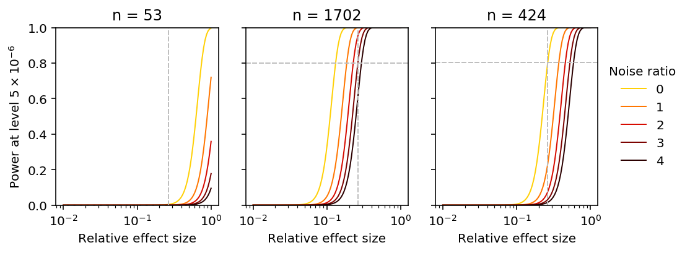